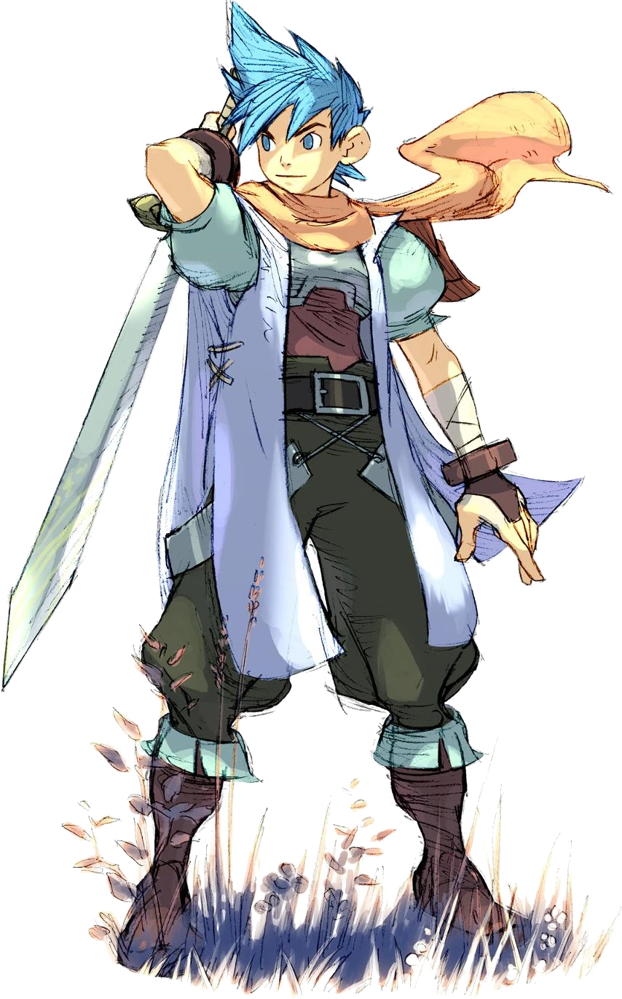

Welcome to the Wiki!
Hello, I'm niahon and this is my personal Breath of Fire Encyclopedia. This isn't meant to be an all encompassing source of all the franchise's information, but just as a project for self improvement in Web Development, so DON'T be surprised with this wiki's often casual tone and demeanor. Besides containing info for the games, it will also have my own views and takes on them, so DO expect a lot of bias towards Breath of Fire 3(my beloved).
As for the naming choices, I prefer to use the closer possible renditions to the japanese names in here, as I feel the original translation of Breath of Fire 1 and 2 are lacking in many areas, to say the least. And the wiki's name is also temporary, it's just an attempt at a wordplay but I honestly have no clue what I was going for. I guess "Frenzy" does start with F just like "Fire" but like ???. I accept suggestions as my brain is not large enough for such a task.
For any essential content that may be missing, it is because of two reasons:
- I don't wanna bother with adding it since as I said, this is only a small project
- I don't wanna risk getting spoiled with content that may flow into other games in the franchise(it's why Deis isn't here)
I might go back to this site in the future, when I finish Breath of Fire 4 and Dragon Quarter, and get better with HTML and CSS to fix the atrocities I've made here(and also actually learn Javascript), but not sure yet. For now this is all you get.
Anyways, I hope that you enjoy what I did here, and I would love if someone who doesn't know the Breath of Fire franchise were to discover it through here and enjoyed it as much as I did. The first 2 games may be clunky and frustrating sometimes, but uh, well I'm not even gonna say they're in my heart or they're worth playing honestly Breath of Fire 3 is miles better and just an incredible RPG overall so play that one thanks!